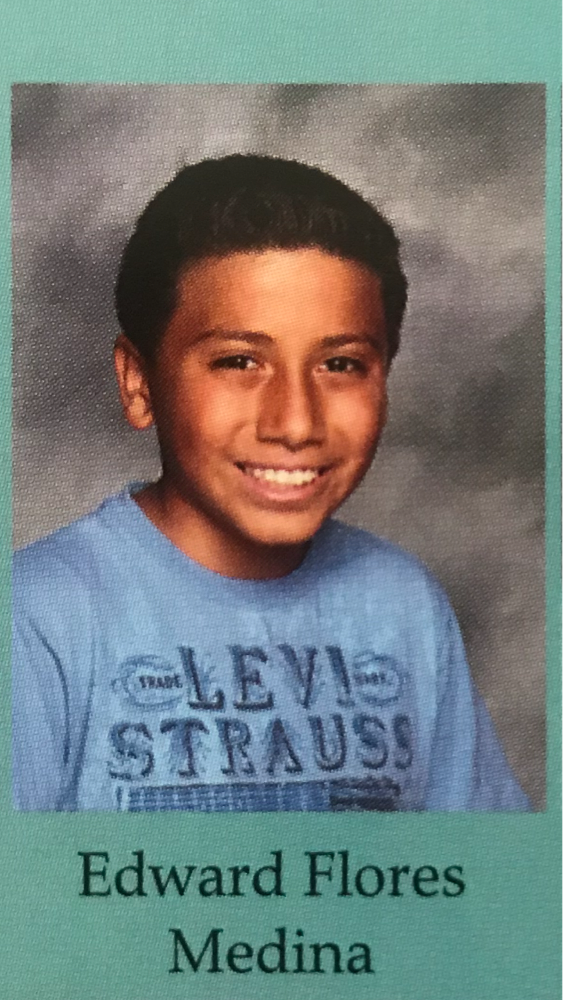
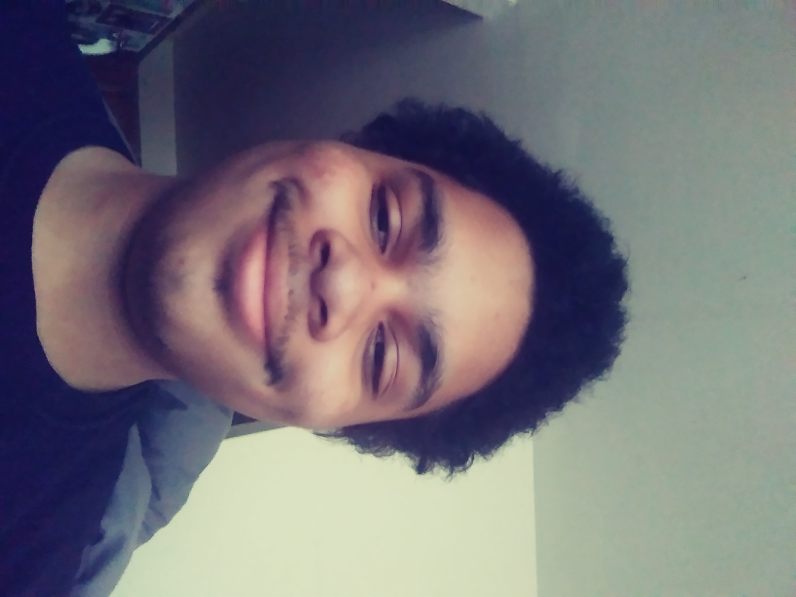
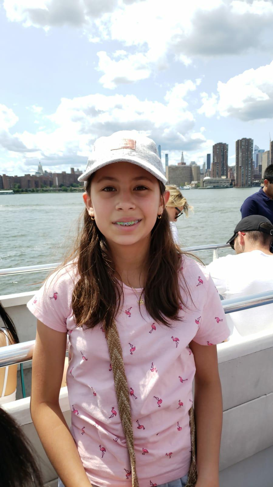
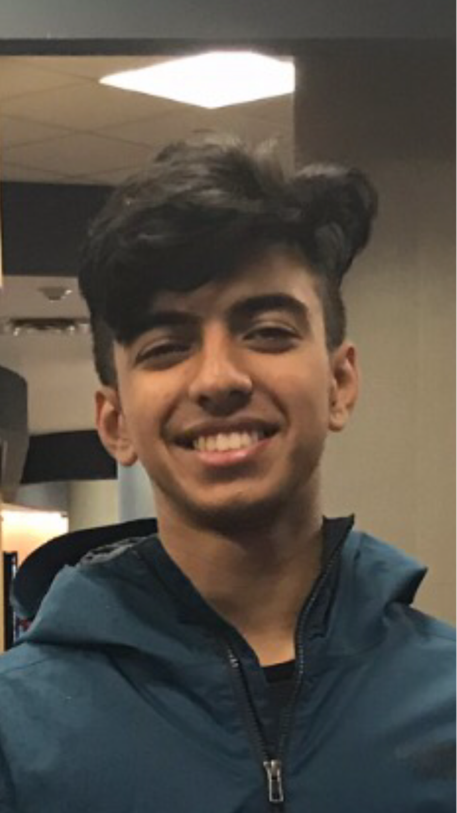

We are a group of talented indivudals currently in a summer course at We Connect The Dots. Our teammembers consists of MELVIN MCBRIDE, ARWA MOID, EDWARD FLORES, SHOUNAK MUKHERJEE and SAMANTHA CASTANO-RAMIREZ
This is Arwa M, made our brand book and helped create the marketing video. She has done a little bit of each part of this project. She is thirteen and is going to be entering school as a freshman this upcoming school year. This is her second time doing a program with nebula academy and she is hopes to do more programs in the future.
The is Edward F and he has created the Social Media pages (YouTube, Instagram, Twitter), he helped pick out our tools that we will be using to help the people in Sub Saharan Africa, and also made part of the 3-D model in Minecraft. He found the sponsors and wrote their discriptions.
This is Melvin M and he helped on the powerpoint and finding sponsors.
This is Samantha Castano and she is a part of Pathways to water. This week I have been coding in Minecraft with the code builder to make a demonstration of what the drones will be doing, by guiding the people of sub- Saharan Africa to safe drinkable water. I have also been making the receipt for all of our expenses. I have also been making 3D models of or building in Minecraft and putting them in a power-point presentation. I have been doing coding on Make code, with some help by Edward I was also researching the drones that we will be using and lastly I have been writing a paragraph about all the information on the drones.
This is Ojas Mehta and he a mentor of Pathways to water. Ojas has been guiding the team with his excellent leadership skills and teaching everyone about all parts of the program so they become more professional.